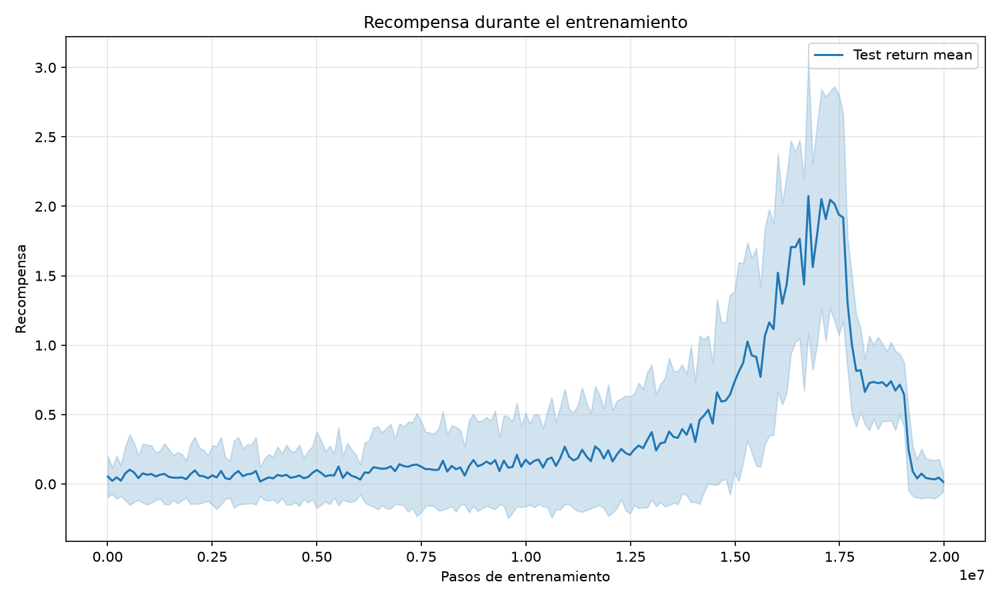
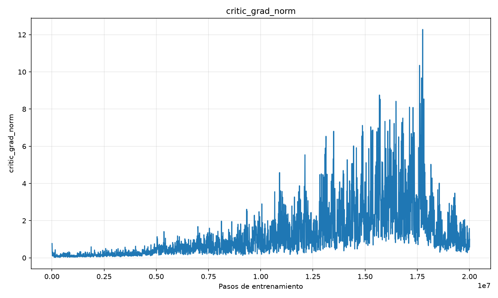
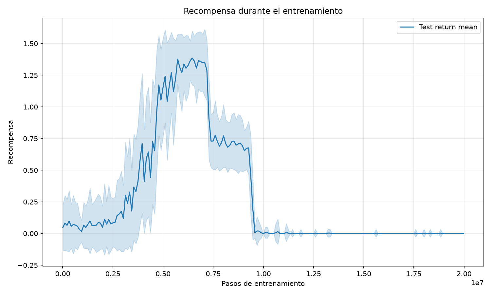
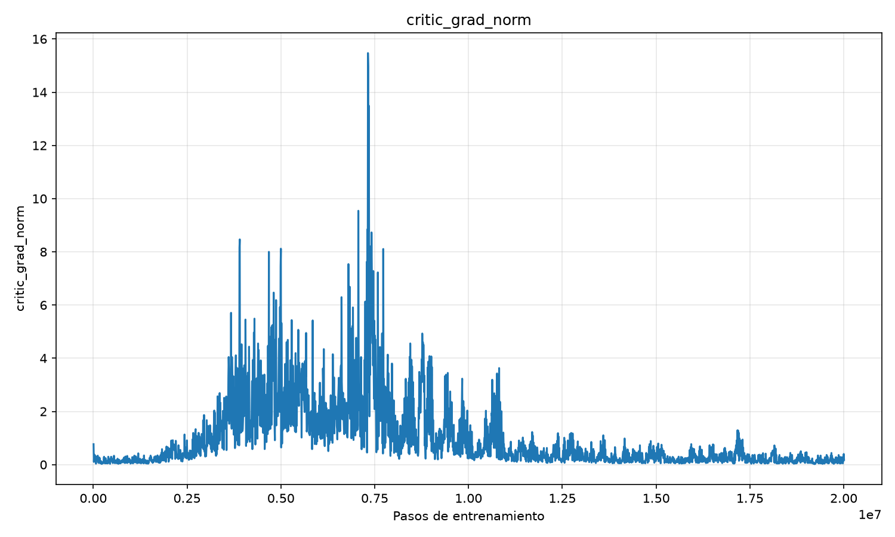
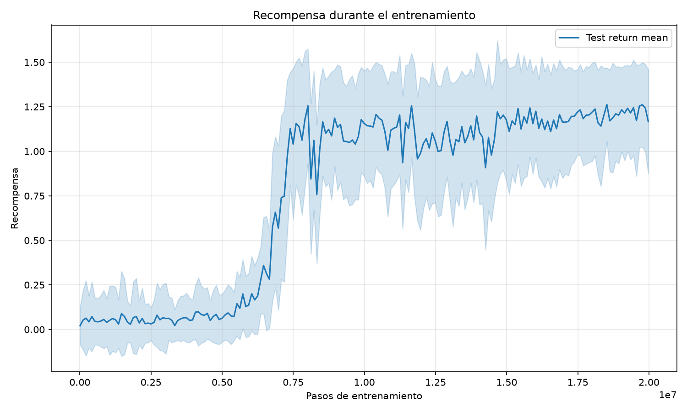
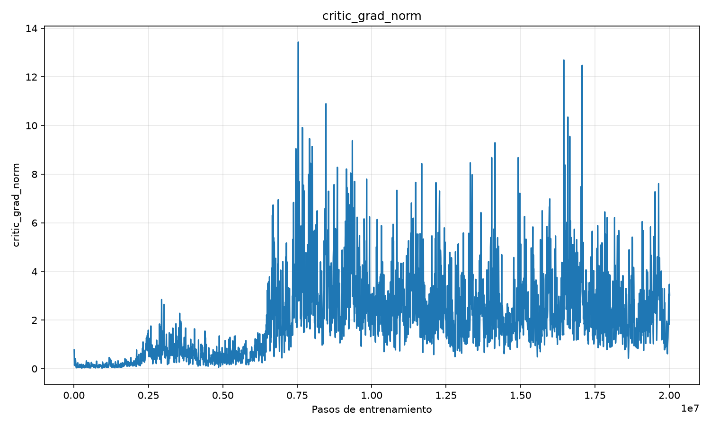
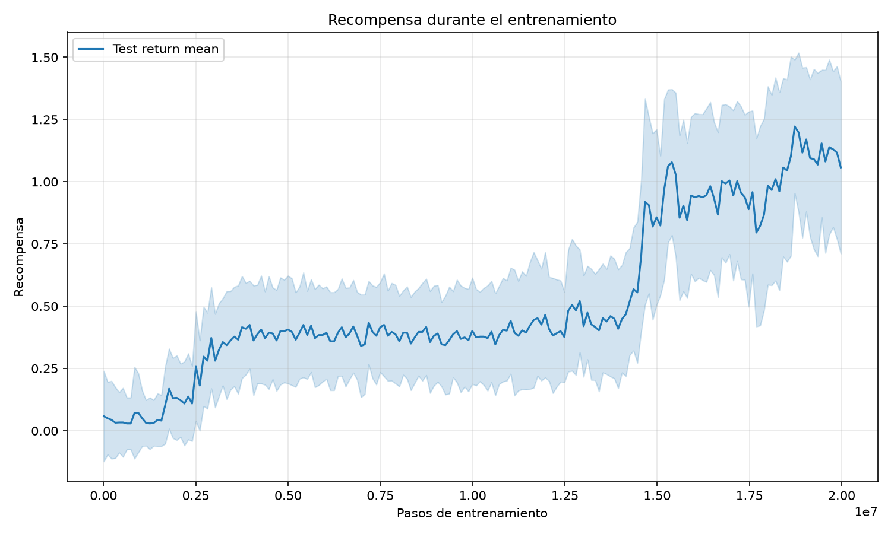
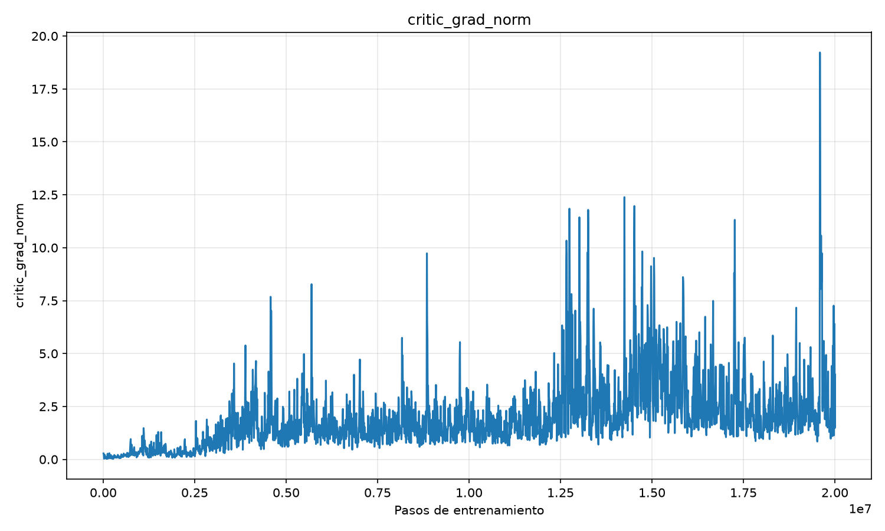
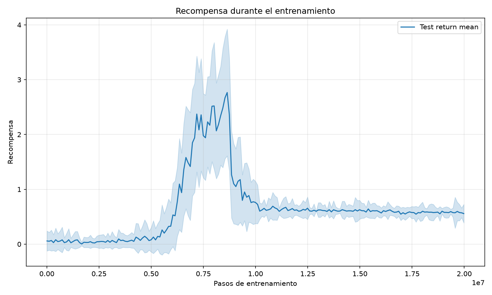
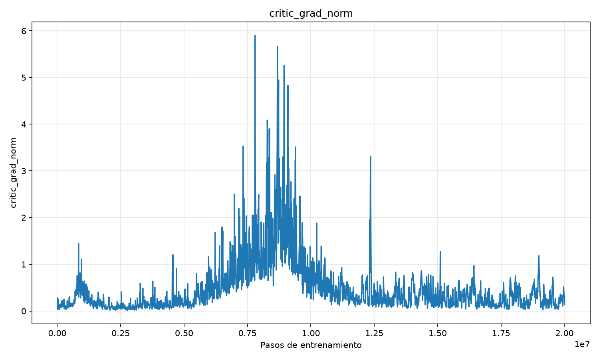

lr=0.002, grad_norm_clip=10, target_update_interval_or_tau=0.01

lr=0.005, grad_norm_clip=5, target_update_interval_or_tau=0.01

lr=0.005, grad_norm_clip=5, target_update_interval_or_tau=0.001

Video de ejecución (Primer experimento en 7e6 pasos)lr=0.0003, grad_norm_clip=5

lr=0.0003, grad_norm_clip=10

Videos de ejecución (Segundo experimento en 9e6 pasos)Random search de parámetros sobre IA2C
Prueba con recompensas individuales, no globales
Escenario con más agentes